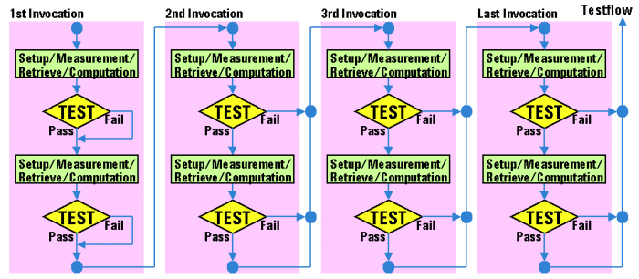

API Behavior on Multisite Testing
As described in the previous sections, the behavior of the test method APIs in multisite testing depends on the state of each site.
However, all the APIs allow site specific setup, execution and result evaluation.
The result APIs store the measurement data of all sites into the cache temporarily when the program is launched for the first tested site. They return the measurement data for the currently tested site from the cache at each execution.
The following describes other points related to the API behavior on multisite testing:
- PUT_DEBUG API works only for a single site that is specified as a focus site in the Site Control window.
- The following APIs are ignored in single-site testing. Hence, you can develop test method
programs that are compatible with both single-site and multisite tests.
- ON_FIRST_INVOCATION_BEGIN() - ON_FIRST_INVOCATION_END()
- FOR_EACH_SITE_BEGIN() - FOR_EACH_SITE_END()
- SET_TEST_FOCUS()
- UNSET_TEST_FOCUS()Note In single-site testing, SET_TEST_FOCUS() and UNSET_TEST_FOCUS() APIs generate a warning message to the report window, and the program execution continues to the next statement. In this case, the setting by these APIs except for site 1 is ignored. You can also ignore the warning message by using the DISABLE_ERROR_MESSAGE API.
- The flag parameter of EXECUTE_TEST or WAIT_TEST_DONE API does not
depend on site information. Hence, if a timeout occurs on one or more sites, "1" is returned to
this parameter regardless of where the timeout occurred. If you use this parameter in the
first-invocation block, keep this point in mind.
Do any "on timeout" process with the timeout flag parameter in the first-invocation block as follows:
INT globalTimeoutFlag; ... ... ON_FIRST_INVOCATION_BEGIN(); ... ... EXECUTE_TEST (100 ms, &globalTimeoutFlag); if (globalTimeoutFlag == 1) { // // Do "On timeout" process // ... ... } ON_FIRST_INVOCATION_END(); ... ...For more details of this functionality, see the reference of above APIs in the Test Method Programming manual.
- The timeout_info parameter of EXECUTE_TEST or WAIT_TEST_DONE API can be used to check whether a timeout error has occurred or not for each
site. Note that the trigger_info parameter is required to get the site
specific information by the timeout_info parameter. The following is an
example of error handling by using the parameter timeout_info to get the site
specific information. Detail of this feature is described in the Test
Method Programming
manual.
static int timeout_info, trigger_info; ... ... ON_FIRST_INVOCATION_BEGIN(); ... ... EXECUTE_TEST (100 ms, &timeout_info, &trigger_info); ... ... ON_FIRST_INVOCATION_END(); ... ... if ((timeout_info >> (CURRENT_SITE_NUMBER() - 1)) & 1) { cout << "Timeout error has occurred on site " << CURRENT_SITE_NUMBER() << endl; TEST("","",TM::Fail,0); } ... ...Note: The keyword static must be used for the declaration of the variables timeout_info and trigger_info in the example above. The variables are filled with the first invocation of the function but evaluated in the invocation for each site. For more information refer to Important Points on Multisite Programming.
- The mistriggered_site parameter of EXECUTE_TEST or WAIT_TEST_DONE
API can be used to check whether the analog modules used for the test have received one or more
triggers or not.
Note that timeout_site parameter is required for using the mistriggered_site parameter. The following is an example of error handling by using the mistriggered_site parameter. Detail of this feature is described in the Test Method Programming manual.
static int timeout_info, trigger_info; .. .. ON_FIRST_INVOCATION_BEGIN(); ... ... EXECUTE_TEST (100 ms, &timeout_info, &trigger_info); ... ... ON_FIRST_INVOCATION_END(); ... ... if ((trigger_info >> (CURRENT_SITE_NUMBER() - 1)) & 1) { cout << "Minimum one analog module has not received any trigger on site " << CURRENT_SITE_NUMBER() << endl; TEST("","",TM::Fail,0); } ... ... - The behavior of the TEST API is slightly different from the behavior for
single-site testing.
When the program is first executed, the program execution does not return immediately to the test flow level and continues even if the continue parameter is FALSE (default) when the test result is fail.
For subsequent executions the program execution goes immediately to the next site's test when the test result is fail.
For the last execution, the program execution returns immediately to the testflow level when the test result is fail.
The figure below shows the behavior of TEST API for multisite testing.

Functional changes
- Introduced before SmarTest 6.3.2